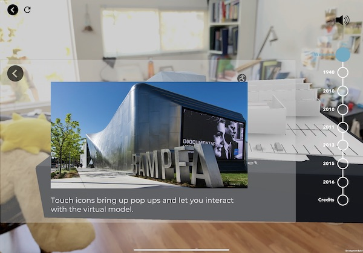

THE TASK
My work was split into two parts: creating an onboarding guide for the 3D model and amphitheatre experiences, and redesigning the navigation UI + interactions for the 3D model experience.
Designing the interactions and UI for an augmented reality museum exhibit iPad app.
BAMPFA AR was an interactive AR exhibition on the history of the Berkeley Art Museum and Pacific Film Archive (BAMPFA) building, exhibited in the BAMPFA in December 2019. It was created by the Berkeley XR group.
I was brought in to assist with the UI and interaction design of the augmented reality iPad app for the exhibit. In the 3 weeks before the exhibit opened, I polished the app’s UI and interactions to make an overall more intuitive and engaging experience for viewers.
The BAMPFA AR: Augmented Time exhibit aimed to inform museum visitors about the history of the museum’s building and how it has changed over time before it eventually became home to the BAMPFA.
To participate in the exhibit, museum-goers borrowed an iPad from the front desk, and then proceeded to their chosen experience. There were 2 main experiences a visitor could choose from: the 3d model experience and the amphitheatre experience.
The 3D model experience featured a physical model of the museum, onto which the AR app projected a 3D rendered model. It then took viewers through an interactive history of the building.
The amphitheatre experience featured a video about the people involved with the museum throughout history, to be watched in the amphitheatre area.
I was in charge of planning and animating onboarding sequences for both experiences. Previous tests done by the Berkeley XR group showed that visitors had difficulty understanding how scanning the markers worked in relation to the exhibition, and thus needed a thorough onboarding sequence to reduce confusion.
The onboarding for the AR experiences were either out-of-date or nonexistent, and didn’t clearly explain how to interact with the exhibit using the app.
My first course of action was to split up the process into multiple steps, rather than just showing all the information at once. I did so by sketching a storyboard for each experience:
By breaking things into smaller steps, I hoped to reduce risk of cognitive overload. Making the process into steps also enabled me to add parts where the viewers would have to actively perform their task with guidance, such as scanning a marker.
I then mocked up the onboarding processes for both the amphitheater and 3D model using figma, and created some animations for them using AfterEffects.
3D MODEL ONBOARDING
AMPHITHEATRE ONBOARDING

In addition to onboarding sequences, I also worked on redesigning the existing navigation UI and some key interactions for the 3D model experience; namely, the timeline/menu and the touchpoint pop-ups.
The original UI displayed the full timeline of the experience, and as a result people would usually jump around to different points in time. However, the experience was meant to be viewed in chronological order, and as a result those who jumped around got confused.
The original UI displayed the full timeline of the experience, and as a result people would usually jump around to different points in time. However, the experience was meant to be viewed in chronological order, and as a result those who jumped around got confused.
I also wanted to make the interactions feel more natural, and make the visuals more intuitive, easy to read, and visible.
For the design of the navigation UI, there were a few main things I focused on:
I used Figma to make some simple layouts and play around with the location and interactions of the UI.
TIMELINE MENU DESIGNS

TIMER DESIGNS
TOUCHPOINT POP-UP DESIGNS
TIMELINE MENU DESIGNS
For the menu UI, we went forward with:
Below is the final design for the menu closed, open, and at different sections.
I also created a timer animation in AfterEffects
TOUCHPOINT POP-UP DESIGNS
For the touchpoint UI, we:
Below is the final UI for it.
The designs shipped to the app successfully, and the exhibit was opened in the BAMPFA in December 2019. Hundreds of visitors used the app to enjoy the exhibit visuals and learn more about the BAMPFA building’s history.
While rushed, I got the experience of working closely with developers to produce a product and also working in the AR space for the very first time.